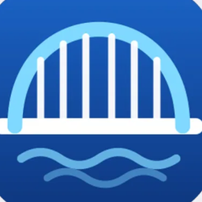

جسر Jisr
هاتفك الأندرويد يصبح جسراً بين أجهزة البلوتوث والكمبيوتر عبر الواي فاي: صوت الكمبيوتر على سماعة الهاتف، الهاتف كماوس وكيبورد، يد ألعاب، حافظة مشتركة، ونقل ملفات.
تحميل لويندوز (Setup.exe)تطبيق الهاتف (APK)كيف تبدأ
- حمّل
Jisr-Setup.exeوشغّله، واتبع الخطوات (اترك خيار جدار الحماية مفعّلاً). - افتح Jisr من قائمة ابدأ. ستظهر نافذة فيها رمز PIN ورمز QR.
- ثبّت تطبيق «جسر» على هاتف أندرويد (8 أو أحدث) وافتحه، واضغط «مسح رمز QR» ووجّه الكاميرا نحو النافذة.
- الهاتف والكمبيوتر على نفس شبكة الواي فاي. بعد الاتصال فعّل الميزة التي تريدها من التطبيق.
إذا ظهرت نافذة زرقاء من ويندوز
الملف غير موقَّع رقمياً بعد، فيعرض ويندوز SmartScreen تحذير Windows protected your PC. اضغط More info ثم Run anyway. وقد يعترض بعض برامج مكافحة الفيروسات خطأً لأن البرنامج يحاكي الماوس والكيبورد ويقرأ الحافظة، وهذا هو عمله. الشفرة المصدرية متاحة في المستودع لتراجعها.
معلومات تهمّك
- الاتصال بين الهاتف والكمبيوتر مشفّر ومحمي برمز PIN، ويبقى داخل شبكتك المحلية. البرنامج لا يرسل شيئاً للإنترنت.
- الجسر يعمل لكل نوع جهاز على حدة (سماعة، كيبورد، ماوس، يد، BLE، SPP) وليس محوّل بلوتوث عاماً.
- الصوت له تأخير بسيط، مناسب للموسيقى والفيديو وليس للألعاب.
- لا تترك الكمبيوتر مفتوحاً على شبكة عامة، وشغّله على شبكة بيتك الموثوقة.
التحقق من سلامة الملف (اختياري)
بجانب الملف في صفحة الإصدار ملف Jisr-Setup.exe.sha256. من نافذة الأوامر شغّل:
certutil -hashfile Jisr-Setup.exe SHA256
يجب أن يطابق الناتج الرقم الموجود في ذلك الملف.